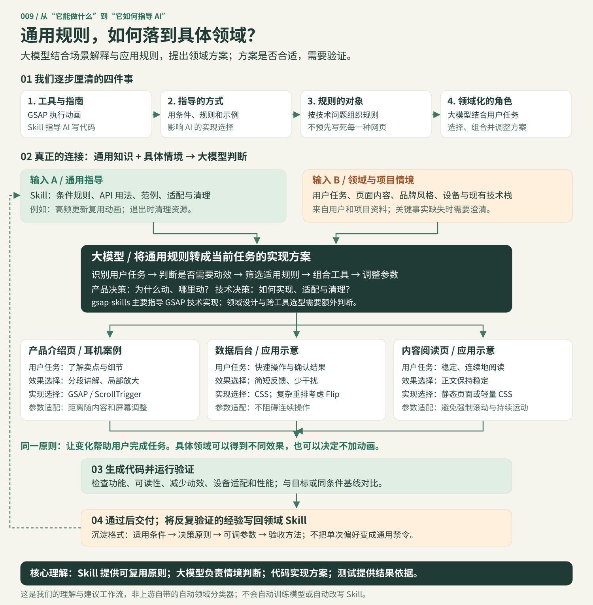
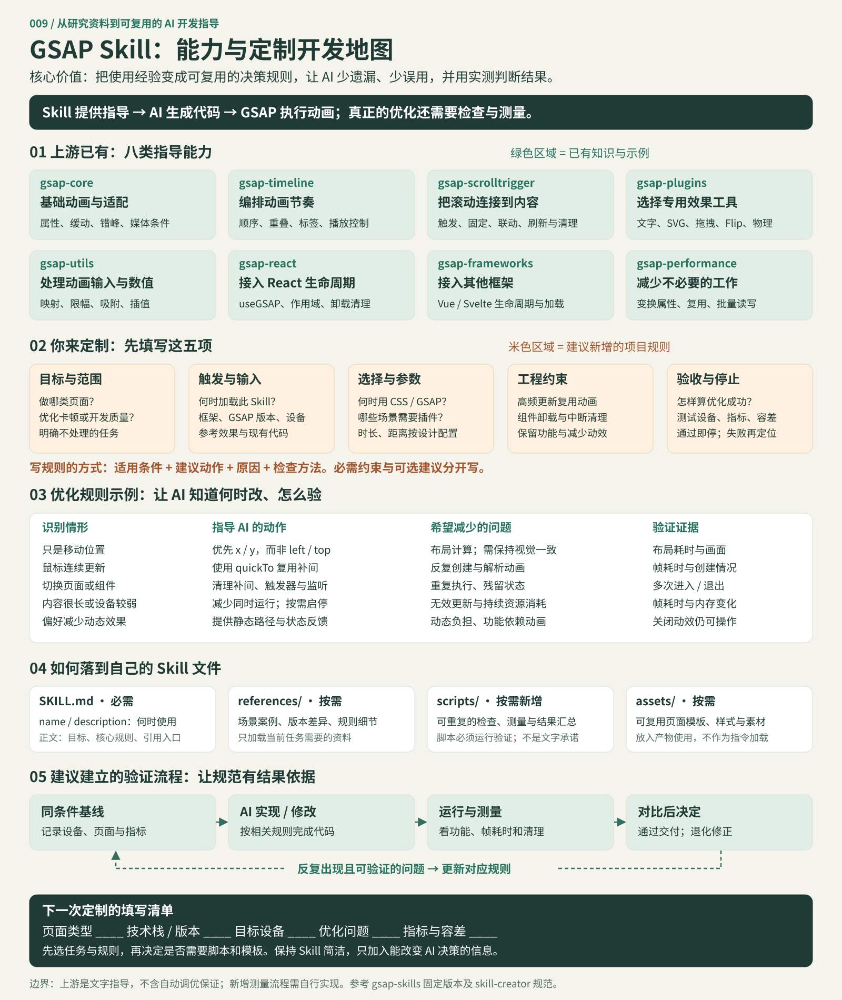

FROM GUIDE TO EXPERIENCE
把 GSAP 使用经验，变成 AI 开发指导。
GSAP 执行动画，gsap-skills 指导 AI 编写动画。 将 GSAP 的 API 用法、动画范例与性能实践整理为 AI 可按需读取的技能，指导实现选择、适配与资源清理；价值在经验复用和减少遗漏，可作为定制领域 Skill 的参考，优化收益仍需实测。
我们的理解：能力、机制与意义
能力：将基础动画、时间线、滚动、插件、工具函数、框架接入及性能实践组织成八类技能，通过条件规则与代码示例指导 AI。
如何指导：宿主按任务选择并加载相关技能，AI 结合项目代码生成实现。例如高频更新复用补间、按需选择变换属性、退出时清理动画。Skill 影响代码决策；浏览器运行时由 GSAP 执行。
如何进入领域：通用规则处理共同技术问题，大模型结合用户任务、内容和设备约束提出具体方案。产品设计与跨工具选型需要额外判断，不能视作 gsap-skills 自带的自动决策系统。
对我们的意义：复用经验、减少遗漏，并为定制领域 Skill 提供组织方式。用“条件、原则、参数、验收”沉淀经过验证的经验。
边界：文字规则不能强制执行；不会自动训练模型或保证优化收益。27 个实验与耳机页验证了主要实现和交互，尚未做有无 Skill 的开发效率、代码质量与业务收益对照评测。
我们的理解过程：从通用指导到领域方案
大模型可以结合具体领域应用通用规则：先理解用户任务，再判断哪些规则适用、是否需要动画、如何实现与调整。它需要用户和项目资料提供情境，结果还要验证。

四层分工：Skill 提供可复用原则；大模型作情境判断；代码实现方案；测试提供结果依据。gsap-skills 主要覆盖 GSAP 实现指导，领域设计与跨工具选型需要额外判断。
按图定制自己的 Skill
先看上游已有的八类指导能力，再填写项目目标、触发输入、决策规则、工程约束和验收标准。下半部把规则连接到文件组织、实际测量与反馈。

下次填写：页面类型、技术栈与版本、目标设备、优化问题、指标与容差。按需选择规则和辅助文件，避免复制全部手册。
上游 Skill 通过文字与示例影响 AI；自动检查、测量和反馈需要另行实现。检查脚本必须执行并通过，才能声称满足验收要求。简单 Skill 可以只包含 SKILL.md。
{kind=link}
昨天的 GSAP，今天的 gsap-skills
底层动画引擎相同。GSAP 在网页运行时更新位置、尺寸、透明度等属性；gsap-skills 在 AI 写代码时提供规则、示例和最佳实践。技能本身不播放动画，也不会为 GSAP 新增渲染能力。
用户提出需求 → AI 参考技能 → 编写网页代码 → GSAP 执行动画
没有技能文件，也能使用 GSAP 做出同样的效果。本次新增的价值是使用规范、能力梳理和完整场景实践；开发效率与代码正确率的增益尚未做对照验证。网页运行时不调用 AI。
四项能力，各自负责什么？
| 工具 | 负责什么 | 本次使用范围 |
|---|---|---|
| Product Design | 内容组织、布局、配色与视觉层次 | 前次研究的相关能力；本次耳机页未调用该插件 |
| gsap-skills | 指导 AI 正确使用 GSAP 与插件 | 参考技能规范；不作为网页运行依赖 |
| GSAP | 时间线、滚动、文字、图形与布局变化 | 27 个实验和耳机产品页实际运行 |
| Canvas UI | WebGL / WebGPU 的云雾、冰霜、水波等特效 | 前次研究的组件；本次耳机页未接入 |
若具体组件开放了对应参数，可以用 GSAP 控制其变化节奏。这是可扩展的组合方式，需要按组件接口实现。
实际场景：从看到产品，到完成选择
- 产品入场：标题与耳机依次出现，用 Timeline、SplitText 建立主次。
- 滚动讲解：ScrollTrigger 固定产品并切换说明，分步讲清卖点。
- 细节放大：通过图片位移与缩放，把描述对准耳罩和头梁。
- 搭配选择：Flip 将配件移到已选区域，让选择结果可见。
- 试听计划：表单生成本地计划，GSAP 负责弹窗与状态过渡。
产品页顶部可关闭动效，对比普通阅读。耳机是二维生成概念图，细节放大不是自由旋转的三维模型；安静模式仅作视觉示意，试听计划不产生真实预约。
沉淀什么，验证到哪里？
能力总表 + 完整场景案例 + 实现与验证记录。 以后按“能力 → 适用场景 → 实际案例 → 实现工具 → 验证边界”复用。
现有 27 个真实实验、8 类技能目录、6 项工具与外部接入资料、1 个完整产品页。主要浏览与选择流程已走通；接入代码说明不代表框架已经运行，设备与组合场景未穷举。尚未证明业务转化、持续性能或 AI 开发效率提升。